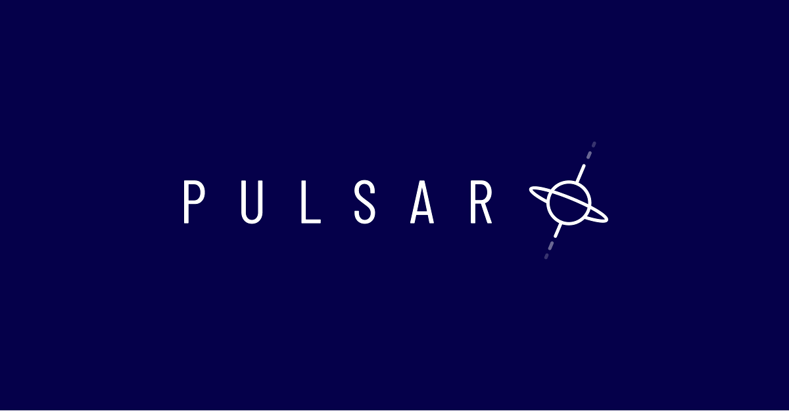

AB Tasty Companion app
This is the first mobile solution created by AB Tasty, thus the first mobile application developped by the company. AB Tasty is an all-inclusive B2B/SaaS tool for website and conversion rate optimization, personalization, user engagement, and A/B and MVT testing. Marketing, product and tech teams use AB Tasty’s solution to rapidly drive ROI and continuously deliver outstanding user experiences.
Context
AB Tasty Companion is a B2B mobile application for AB Tasty end users to follow and monitor their campaigns on-the-go. We wanted to solve the problem of users being unable to take immediate action whenever there is a bug or any other critical error on their campaigns whenever they are away from their work environment, such as commuting in the train or away on holidays.
Target Audience: AB Tasty users, more specifically CRO managers & consultants that use the tool on a daily-basis.
Product goals: Campaign monitoring in mobility, user notification on important changes in their campaigns and account details.
Process
We started the research by studying our personas and user journey. One month before we started the project, another squad had done some intense research on our customers in order to update the the three main personas we have as established profiles of our main users. Therefore, we were able to use them on this project to start drawing the navigation structure for the app and the intended user journey for each persona.


The scope of the mobile app is not the same as the web solution. Based on the user research, persona and user journey we mapped out, we were able to determine the main focus of the app: to allow users to have an overview of their campaigns and take "emergency" actions if needed, such as playing a campaign, pausing a campaign or clearing the framework (removing the AB Tasty tag immediately from their webiste in case of a bug or conflict of any kind).
Ideation
The project was happening at the same time as the UI revamp of the platform, so we had the incredible support from Morgane, the visual designer, to create the illustrations and visual assets for the app. First, we created low-fidelity mockups to validate each screen and interactions internally.


Prototyping
Next, after the main screens and naviagtion patterns were finalized, we jumped to the UI, animations and interaction details. Our design system is called Pulsar and presents a "outer space" theme. Thus, me and the Visual designer were able to explore different ideas to merge the system concept with the user experience in the app. Here are some examples:
- When the user clears the framework - meaning, they remove AB Tasty tag from their website - we show an astronaut lost in space. A similar image is shown when the search results in the campaigns list return empty.
- When the user needs to refresh their campaigns list, we offer an animated rocket launching to space, a very nice gamified interaction while waiting for the page to refresh. While the user holds the finger on screen, the rocket trembles on the ground to prepare to fly. Only after the uses releases the finger that the rocket starts flying.
- For all actions requesting a loading time, we used the custom loader based on the Pulsar theme: a solar system-like animation with planets spinning around concentric lines. Neat!
We used Lottie library to create all animations in the app: a very light and compatible solution for all operational systems.



Outcome
We launched the Companion app version 1.0 for all AB Tasty customers in October 2018. The users should use the same credentials they already have for the desktop app, which means no registration is needed. They can simply download the app on their personal mobile devices.
- The Companion app is currently available on App Store and Google Play, only in English.
- And here is an article explaining how the app works.

Challenges & Learnings
The company created a new team to work exclusively on this project. It was also the first project where I had to build something from scratch. I've worked on the research phase, wireframes, user testing, and also created the high-fidelity mockups and deliverables for the developers.
I had the opportunity to organise and document the whole project from end-to-end with the help of the PM, including not only UX design-related tasks (scope, research findings, UI guidelines) but also creating user stories and technical specifications for the developers and describing story telling scenarios for the product marketing team.
Team
Product Manager: Julie Dumont
Product Designer: Bettina D'ávila
Visual Designer: Morgane Ruaud
iOS Developer: Adel Ferguen
Android Developer: Raphaël Blanadet

Dashboard for CXO campaigns management
B2B Web Platform
AB Tasty is an all-inclusive B2B/SaaS tool for website and customer experience optimization.

Mobile app for CXO campaigns management
B2C Mobile App
B2B mobile application for end users to follow and monitor their campaigns on-the-go.

Helping users to create a new password
B2B Web Platform
Changing our password is often necessary and, sometimes, mandatory. But never a fun task.